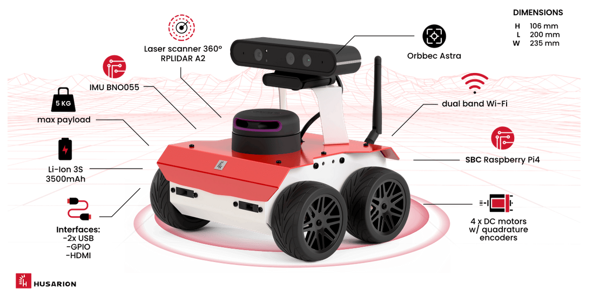
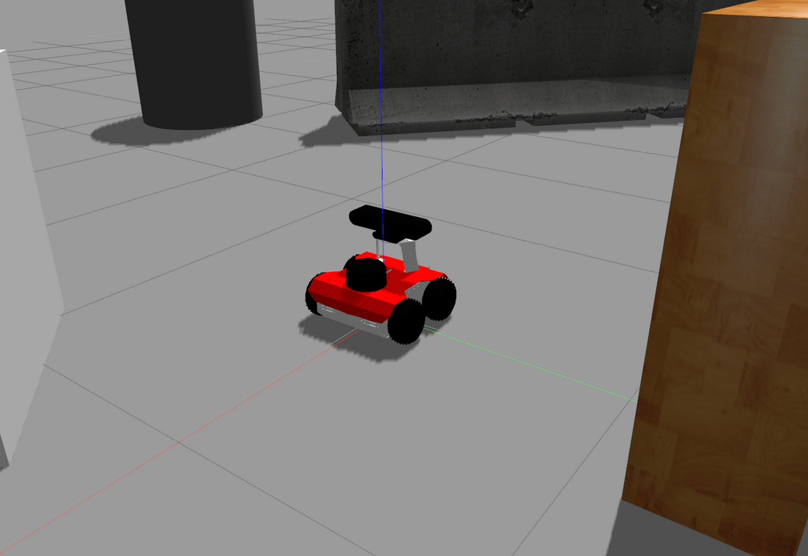
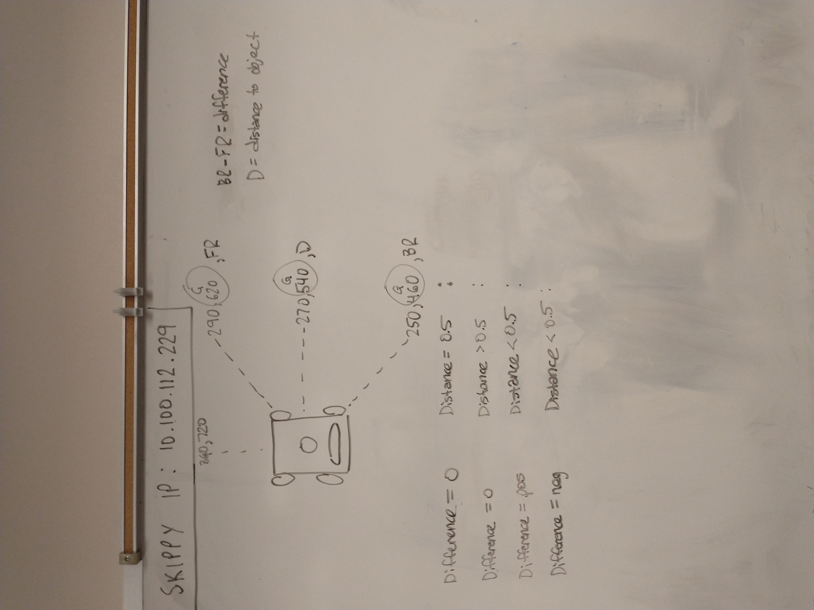

ROSbot with Right Wall Following Algorithm
During my Bachelor's degree at Kennesaw State University, as part of my Intermediate Programming for Mechatronics course, I had to develop a simple right-wall following algorithm and test its functionality on a physical wheeled mobile robot as well as a simulated version.
To do this, I worked with ROS1 on a ROSbot from Husarion. This mobile robot was wheeled with a 360-degree RPLIDAR A2 laser scanner, optical sensors for visualization, and DC motor control with quadrature encoders via an onboard Raspberry Pi4.

Using ROS, I programmed the mobile robot to wall follow any obstacle by calling a simple subscriber function that collects the LiDAR data from the laser scanner. This subscriber would feed the data into my algorithm (coded in C++) and publish the results to the wheel velocity topic on the robot. This algorithm was tuned to work both in simulation and on the physical system.

The algorithm itself was very simple. It selected various points in the LiDAR scan and took measurements of those select points. The first point of interest was on the top right, the second was on the middle pointing perpendicular to the orientation of the robot, and the third point was on the bottom right of the robot's scan. The front orientation of the robot was also extracted to make sure there were no impacts with obstacles in the front. Based off of the difference between the BACKFRONT and the FRONTRIGHT as well as the DISTANCETOWALL, a different motor control was published to the wheel velocity topic. This approach was a very naïve approach that exceeded the speed thresholds required for success by a large margin.

The first video below shows the physical implementation of the algorithm. The second shows the implementation of the algorithm in Gazebo, a simulator that allows you to test algorithms and robots without the need for a physical bot.
Technical Highlights- OS1 publish/subscribe communication model
- LiDAR-based environment sensing (RPLIDAR A2)
- C++ real-time control implementation
- Reactive wall-following and obstacle avoidance
- Scan data processing and feature extraction
- Differential drive robot velocity control
- Simulation and hardware validation (Gazebo + physical robot)
Current Location
North of Atlanta, GAUnited States of America